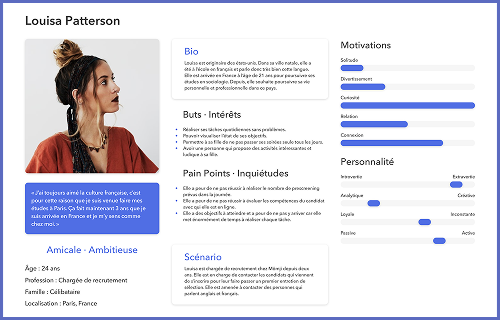
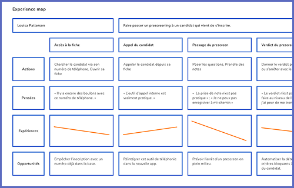
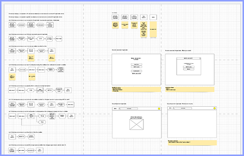
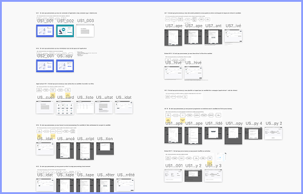
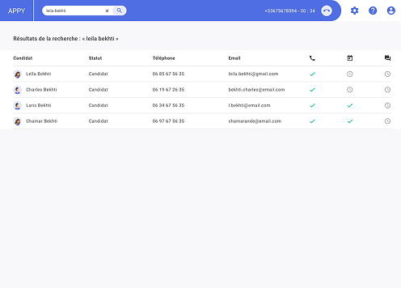
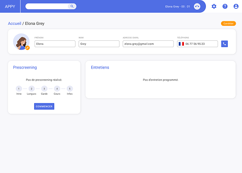
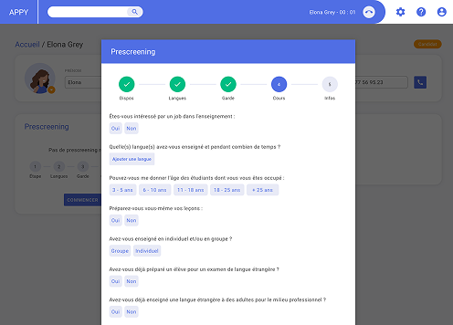
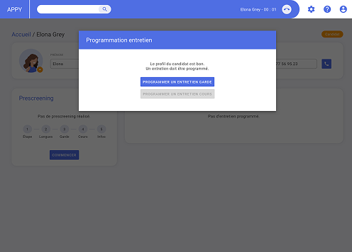
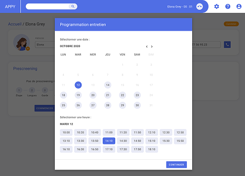
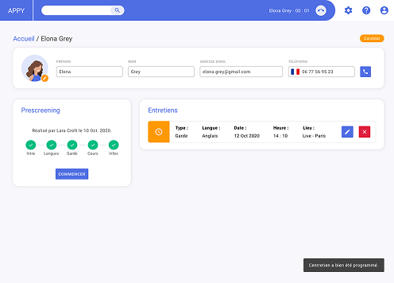

Contexte & Objectifs
Chez Mômji, le quotidien des recruteurs consiste à évaluer des babysitters sur leurs compétences et leurs savoir être. Pour réaliser ce travail, ils utilisent un CRM développé en interne qui, d'après eux, montre des limites. Le projet consiste à créer une application web dédiée aux recruteurs, qui soit indépendante du CRM existant et qui permette de réaliser la totalité du processus de recrutement.
Permettre aux recruteurs de réaliser toutes leurs tâches quotidiennes en un seul endroit
Augmenter la facilité et la rapidité avec lesquelles les recruteurs réalisent leurs tâches
Réduire le risque d'erreur d'appréciation des candidats par les recruteurs
Discovery
Audit UX
Réalisation d'un audit UX du CRM utilisé par les recruteurs, basé sur les critères heuristiques de Bastien et Scapin
Entretiens
Réalisation d'entretiens semi-directifs avec 5 recruteurs : on passe en revue leur travail quotidien, comment ils utilisent le CRM, comment se passe un entretien avec un candidat
Persona

Experience map

User problem statement
Les recruteurs ont besoin d'être guidés lors d'un entretien avec un candidat pour estimer rapidement et correctement les aptitudes de ce dernier
Idéation
How might we
Définition des énoncés "Comment pourrions-nous" avec l'équipe, basée sur les informations que nous avons recueillies
Features
Idéation et priorisation des features à proposer dans la solution
| Priorité | Feature |
|---|---|
| Must have | Chercher la fiche candidat Accéder à la fiche candidat Lancer un prescreen par téléphone Valider / Invalider le candidat Programmer un entretien |
| Should have | Invalider automatiquement le candidat selon certaines conditions |
| Nice to have | Programmer un entretien automatiquement à la fin du prescreen |
| Won't do | Lancer un prescreen par vidéo |
Design
User flows

Prototype mid-fidelity

User tests
Réalisation de user tests pour éprouver le prototype sur différents scénarios, qui nous ont permis d'améliorer le prototype
Prototype high-fidelity

La liste de résultat permet de voir rapidement si le prescreen a été fait, si l'entretien est programmé et si il a été fait.

La fiche permet de voir les infos du candidat, l'état du prescreen avec les étapes et les entretiens programmés, réalisés, etc.

Le script du prescreen s'ouvre depuis la fiche et guide l'utilisateur grâce aux cinq grosses étapes avec un ordre logique.

Le système détecte automatiquement si le candidat peut continuer le processus de recrutement interne.

Il est maintenant possible de planifier les entretiens directement dans l'outil, les créneaux et les horaires apparaissent si dispo.

La fiche permet d'afficher un récapitulatif de l'avancement du prescreen, ainsi que les entretiens passés, à faire, etc.